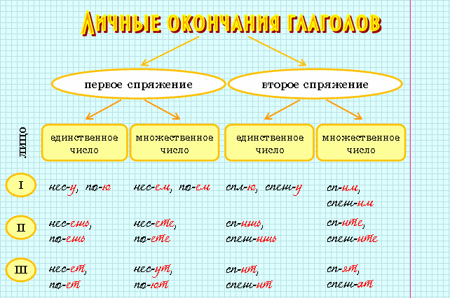
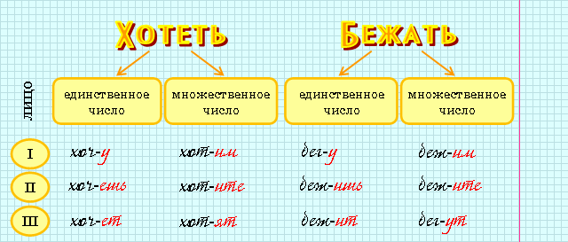
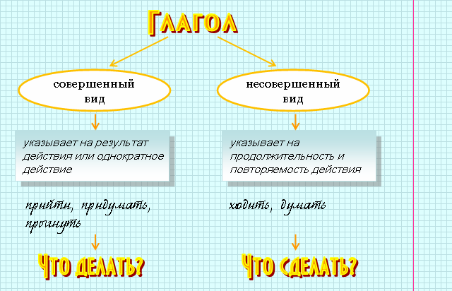

|
Глагол – это самостоятельная часть речи, которая обозначает действие и отвечает на вопросы что делать? что сделать? в начальной форме. |
|
Изменение глаголов по лицам и числам называется спряжением. Спрягаются глаголы только в изъявительном наклонении в настоящем и будущем времени. |

 |
все глаголы, имеющие в инфинитиве -ить (кроме брить, стелить и образованных от них выбрить, постелить и т.д.) |
|
7 глаголов на -еть (смотреть, видеть, зависеть, ненавидеть, терпеть, вертеть, обидеть и образованные от них) |
|
4 глагола на -ать (слышать, дышать, держать, гнать и образованные от них) |
 |
Глаголы хотеть, бежать и образованные от них называются разноспрягаемыми. Они спрягаются частично по первому, частично по второму спряжению. |


|
Переходные глаголы обозначают действие, направленное на прямой объект, выраженный обычно именной частью речи в винительном падеже без предлога. Таким образом, от переходного глагола к дополнению можно задать вопрос кого? что? |  |
Люблю (что?) грозу в начале мая. |
|
Непереходные глаголы обозначают действие, не способное переходить на прямой объект. | |
По росистой траве, по кудрям лозняка от зари алый свет разливается. |
|
Возвратные глаголы (с постфиксом -ся) всегда непереходные. |
|
Глагол имеет три наклонения: изъявительное, условное и повелительное. Глаголы изменяются по наклонениям.
Глаголы в изъявительном наклонении обозначают действия, которые происходили, происходят или будут происходить. |
 |
в прошедшем времени – по числам и по родам (в ед.ч.) | |
сделал – сделала – cделали |
|
в настоящем и будущем времени – по лицам и числам | |
делаю – делаешь – делаете, сделаю – сделаешь – сделаете |
|
Глаголы в условном наклонении обозначают возможное или желательное действие. |
|
С помощью учителя ученики решили бы эту задачу. |
|
Глаголы в повелительном наклонении обозначают действие, к которому говорящий побуждает своего собеседника. Это может быть просьба, приказ, пожелание, совет. |
|
Достаньте тетради. Не сорите на улице! |